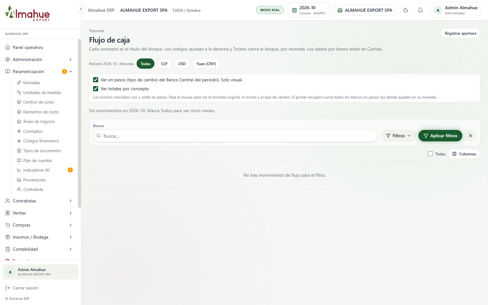
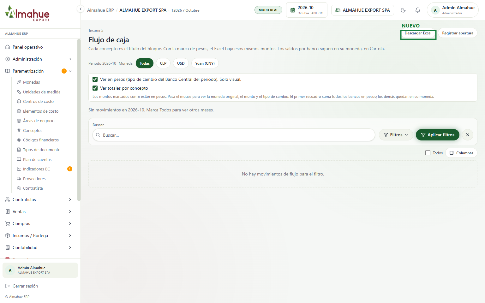
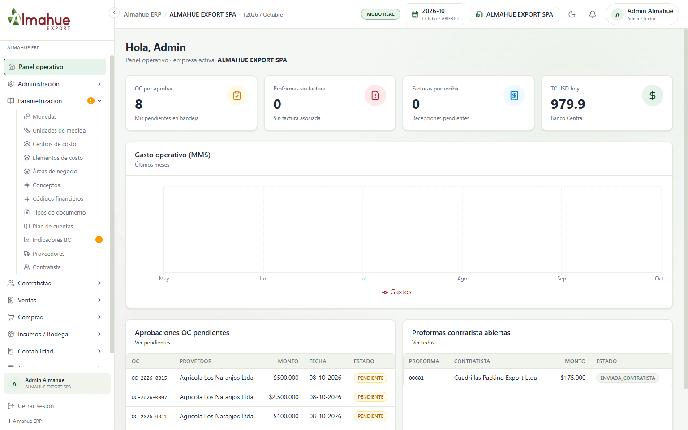
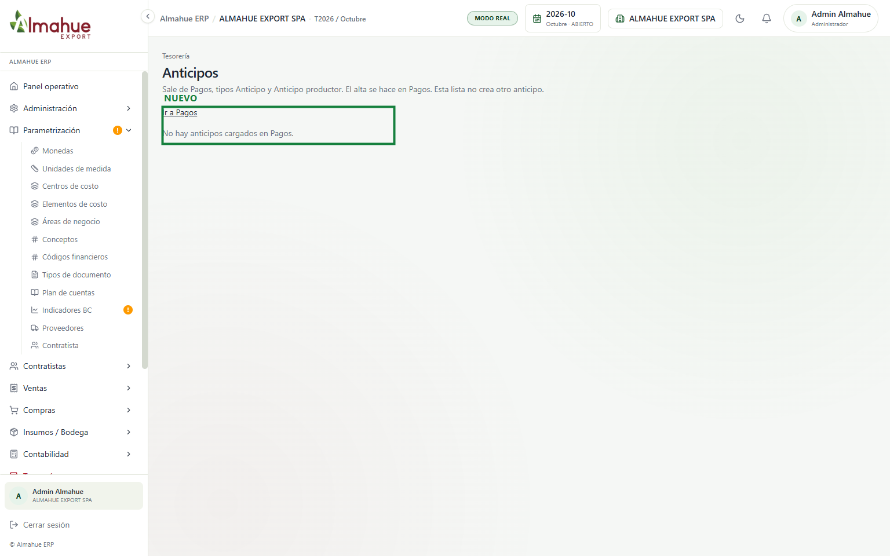
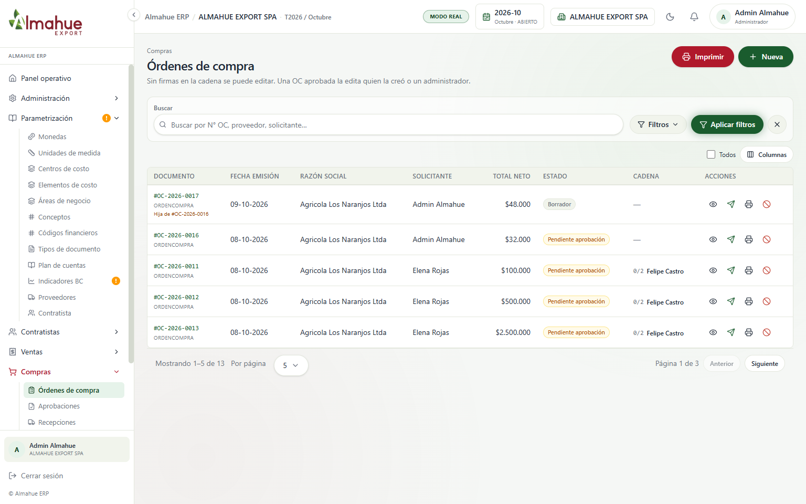
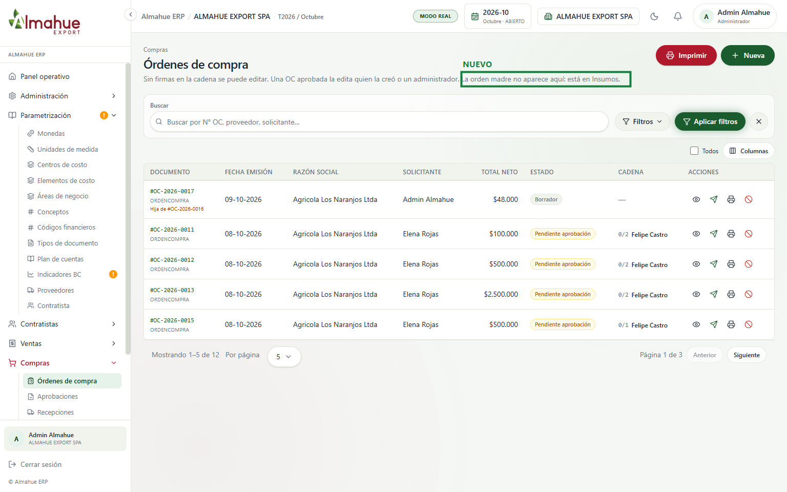
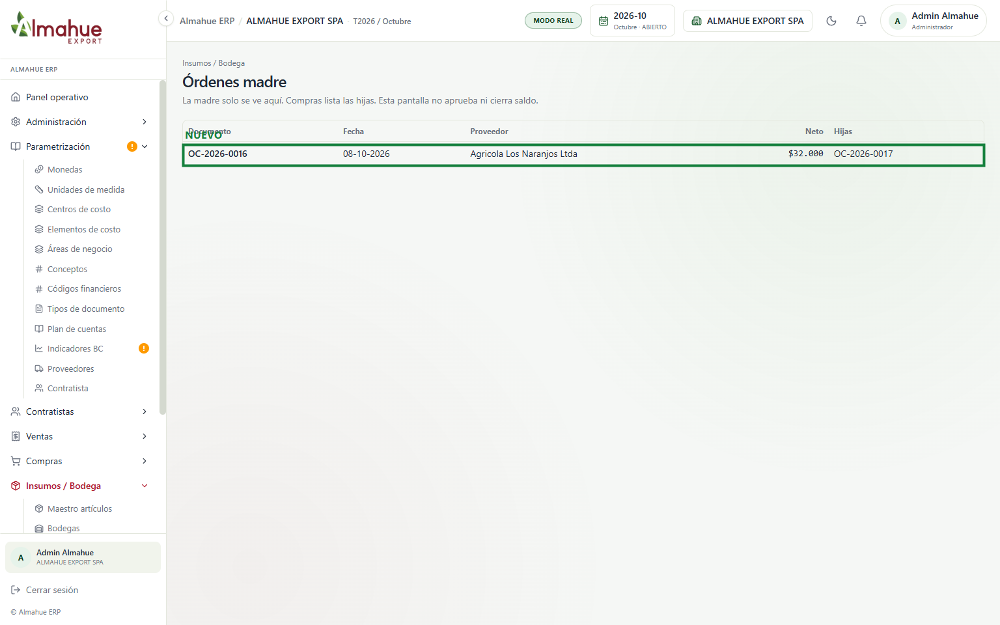
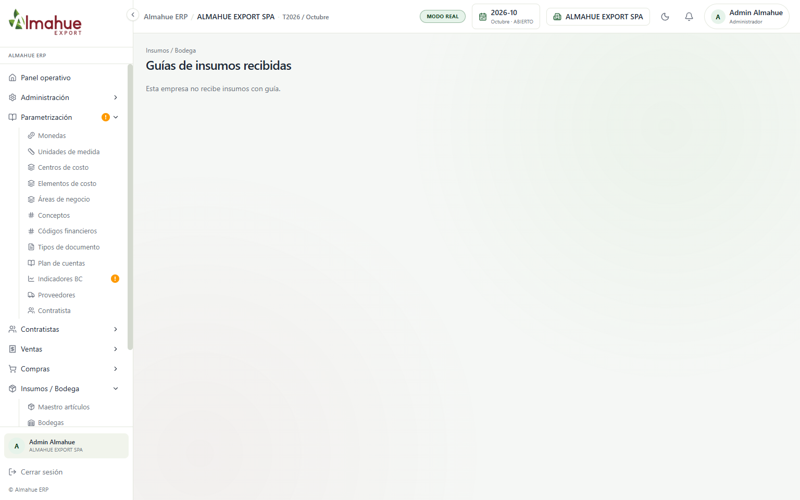
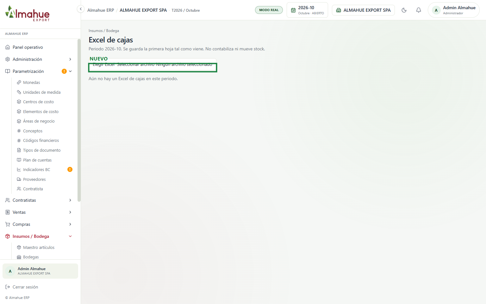

izquierda / derecha: antes y después. + y - : zoom. Esc cierra
ALMAHUE EXPORT SPA, modo real, periodo 2026-10. El recuadro verde y la etiqueta NUEVO están solo en la captura, no en el sistema. Un clic abre la imagen. La rueda o las teclas + y - hacen zoom. Izquierda y derecha cambian entre el antes y el después. Esc cierra. No se descargó el Excel, no se eligió un archivo, no se aprobó ni se cerró ninguna orden. La guía toma el precio de la orden aprobada del mismo proveedor y, si no hay orden, el del maestro: esta sociedad no tiene la pantalla de guías prendida, así que ese cambio no tiene foto. Al reversar una venta, si el aging no trae el id del documento, se busca por folio. Tampoco se reversó un documento para la foto.


Descargar Excel baja la misma vista. Si está marcada la opción de pesos, el archivo sale en pesos con el tipo del Banco Central. Si falta el tipo, la moneda queda como está. Los saldos por banco siguen en su moneda. No se apretó el botón.


La lista lee Pagos de tipo Anticipo y Anticipo productor. El alta sigue en Pagos. Esta pantalla no crea otro anticipo. En octubre no hay filas de ese tipo. No se registró un pago.


OC-2026-0016 salió de este listado. Queda la hija OC-2026-0017. El listado pasó de 13 a 12. No se editó ni se envió ninguna orden.

Insumos, Órdenes madre, muestra OC-2026-0016 y su hija OC-2026-0017. La pantalla no aprueba ni cierra saldo. No se apretó ninguna acción sobre la orden.


La pantalla es nueva. Guarda la primera hoja del periodo y no contabiliza ni mueve stock. En octubre no hay archivo. No se eligió ninguno.